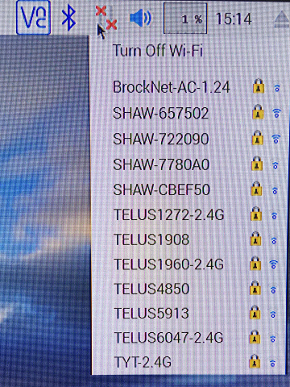
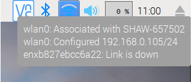
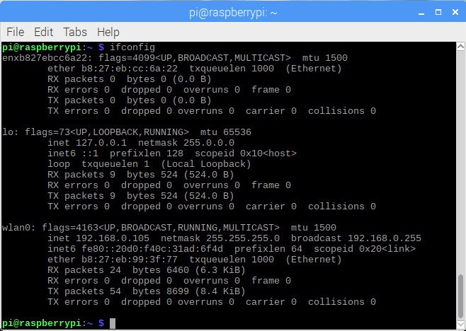
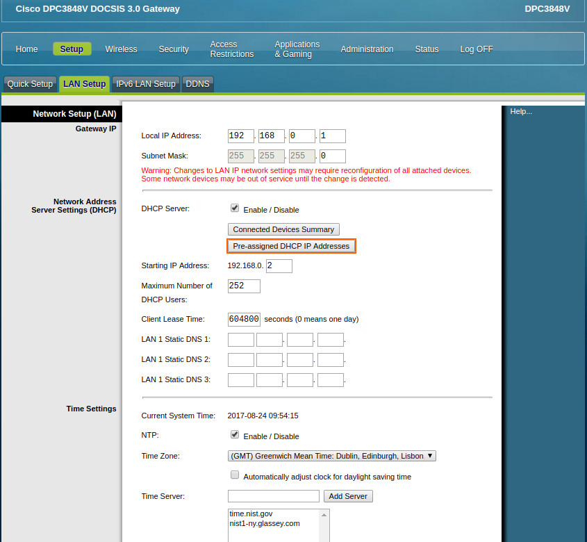
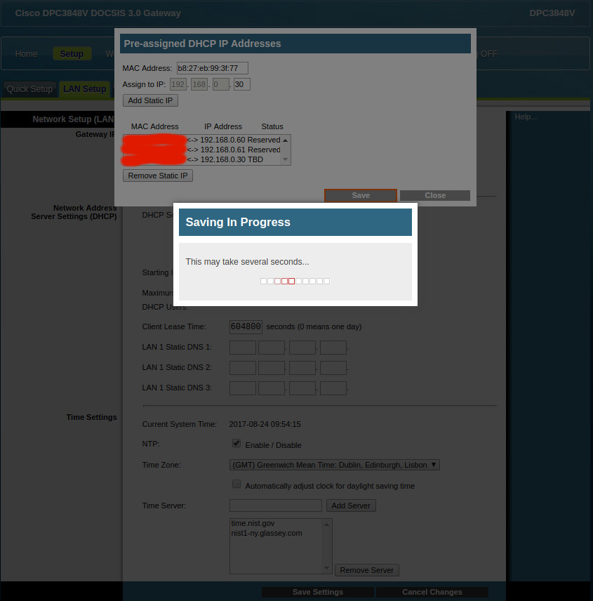
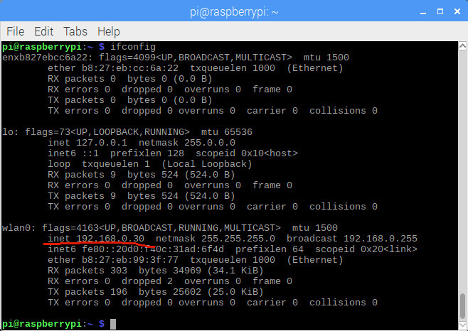

1.5 Network Configuration
So far, we are NOT able to surf the Internet yet. In this chapter, we are going to enable our Internet by configuring network settings, and then set up a static IP address for your Raspberry Pi.
1.5.1 Connect to Internet
Command
ifconfig
shows the current network configuration.

Obviously, there is NO Internet yet, as indicated on the top-right corner.

And, by clicking on the Wifi icon, it will open a list of detected Wifi networks:

You will notice that Raspberry Pi 3B ONLY detects the 2.4G Wifi network, which can be confirmed from its official specification. Clearly, BCM43438 is the chip with
a 2.4 GHz WLAN IEEE 802.11 b/g/n MAC/baseband/radio, Bluetooth 4.1 support, and an FM receiver.
Click on your network, the Pre Shared Key dialog will be popped up for you to input the password, as follows:

After inputing the correct password to your Wifi, you will see the Internet is NOW connected:

Move your mouse to the Wifi icon, you will see the network information about wlan0.

Now, let's have a look at the network configuration by command
ifconfig
again.

As you can see, the IP address is NOW automatically allocated as 192.168.0.105.
1.5.2 Set Static IP (Optional but Strongly Recommended)
In order to be more easily and accurately locate which device is of which IP address, without shifting to a NEW IP address while reconnecting to the SAME network, users would like to set static IPs for frequently-used devices.
There are at least three ways to set up a static IP for Raspberry Pi 3B.
I. Router
Specifically for ther author's Cisco router, there is a place to specify Pre-assigned DHCP IP Address.

After this Pre-assigned DHCP IP Address dialog is opened, we Add Static IP, then Save. Finally, we will be able to see the Success dialog.



After the static IP configuration from within the router, we reconnect(disconnect first and then connect again) Raspberry Pi 3B to Internet, we'll be able to see the IP address has already changed accordingly.
However, to think of one additional issue? If the router is rebooted for some reason, all pre-assigned IP will be forgot by the router, what are you going to do?
Yes. The answer is: do some configuration on the Raspberry Pi 3B, instead of router.
II. Configure /etc/dhcpcd.conf
Refer to ModMyPi online blog How to give your Raspberry Pi a Static IP Address - UPDATE
/etc/dhcpcd.conf is supposed to be configured as:
interface eth0
static ip_address=192.168.0.31/24
static routers=192.168.0.1
static domain_name_servers=192.168.0.1 8.8.8.8
interface wlan0
static ip_address=192.168.0.30/24
static routers=192.168.0.1
static domain_name_servers=192.168.0.1 8.8.8.8
III. Configure /etc/network/interfaces and /etc/wpa_supplicant/wpa_supplicant.conf
Refer to ModMyPi online tutorial Tutorial - How to give your Raspberry Pi a Static IP Address
For /etc/network/interfaces, the following snippet of code is to be added at the bottom:
auto eth0
iface eth0 inet static
address 192.168.0.31
netmask 255.255.255.0
gateway 192.168.0.1
allow-hotplug wlan0
iface wlan0 inet static
address 192.168.0.30
netmask 255.255.255.0
gateway 192.168.0.1
wpa-conf /etc/wpa_supplicant/wpa_supplicant.conf
For /etc/wpa_supplicant/wpa_supplicant.conf, the default network is needed to configure as follows:
ctrl_interface=DIR=/var/run/wpa_supplicant GROUP=netdev
update_config=1
country=CA
network={
ssid="Wifi Network SSID"
psk="Password Phrase"
key_mgmt=WPA-PSK
}
respectively.
A lot more discussion can be found in Raspberry Pi Official Forum, topic title Raspberry Pi 3 Wifi Static IP.
Here in our case, /etc/network/interfaces and /etc/wpa_supplicant/wpa_supplicant.conf are modified accordingly, while /etc/dhcpcd.conf is left as it is.
After the network is configured, ifconfig brings a NEW IP address: 192.168.0.30.

What's WEIRD
Two weird things are:
If /etc/dhcpcd.conf is configured, Raspberry Pi 3B with Raspbian Stretch CANNOT connect to the Internet any longer.
If /etc/network/interfaces and /etc/wpa_supplicant/wpa_supplicant.conf are configured, Raspberry Pi 3B with Raspbian Stretch is ABLE to connect to the Internet, but with the top right corner Wifi sign as Unconnected or Disconnected: